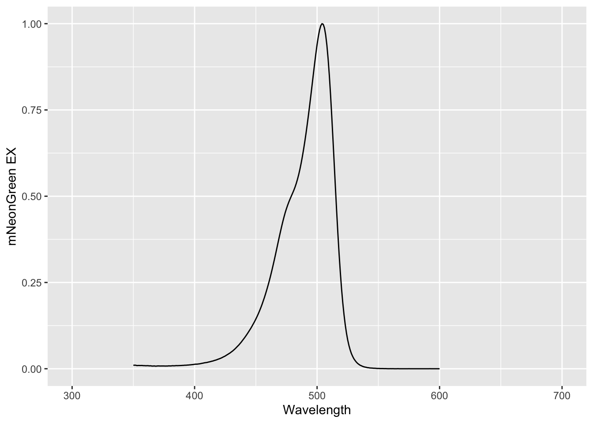
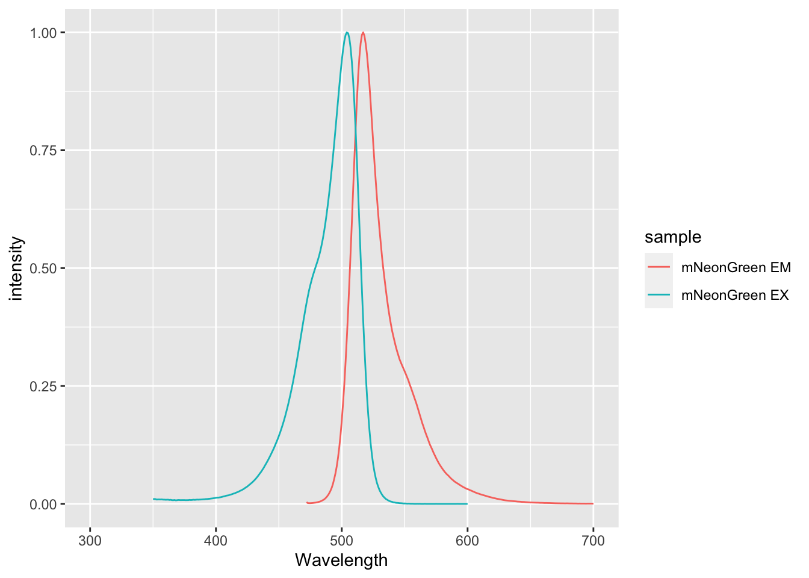

Chapter 2 Reading and reshaping data
2.1 Introduction
Experimental data can be recorded and stored in different ways. Anything that is not digital (e.g. notes in an physical labbook) has to be converted, before it can be used in a computer. Nowadays, most information is already in a digital format and stored in a file. This can be a text file, an excel file, or a file generated by a piece of equipment.
In R, the main structure for storing and processing data is a ‘dataframe’ (a modernized version of the dataframe is a ‘tibble’, which is available when the tidyverse package is used). The dataset mtcars that comes with R is a dataframe. We can check the type of a structure or variable by using the function class(). This is a very helpful function to learn about the class of an object:
class(mtcars)[1] "data.frame"The dataframe itself can be printed by just typing its name. To look only at the first rows we can use the function head():
head(mtcars) mpg cyl disp hp drat wt qsec vs am gear carb
Mazda RX4 21.0 6 160 110 3.90 2.620 16.46 0 1 4 4
Mazda RX4 Wag 21.0 6 160 110 3.90 2.875 17.02 0 1 4 4
Datsun 710 22.8 4 108 93 3.85 2.320 18.61 1 1 4 1
Hornet 4 Drive 21.4 6 258 110 3.08 3.215 19.44 1 0 3 1
Hornet Sportabout 18.7 8 360 175 3.15 3.440 17.02 0 0 3 2
Valiant 18.1 6 225 105 2.76 3.460 20.22 1 0 3 1When we read experimental data from a file, this implies that we transfer the information to a dataframe in R. A dataframe can hold several types of data. Let’s first look at what different types of data you may encounter.
2.2 Types of data
All the information that is recorded during an experiment can be considered as data. Details of the experimental approach or setup are called metadata, and the data that is measured is the raw data. Data visualization primarily deals with the raw, measured data. Yet, adding data on the experimental design or other types of metadata can be important for the interpretation of the data. The raw data mostly consist of numbers, but these are often accompanied by labels for experimental conditions or to identify objects. All this information is data, but they are clearly of different types. Let’s have a look at the most common types of data.
Measurements usually result in quantitative data consisting of numbers. For instance when an optical density is measured with a spectrophotometer or when temperature is determined with a thermometer. This kind of data is called quantitative and continuous data, since it can have any number ranging from minus to plus infinity. Another type of quantitive data is quantitative and discrete data and it consists only of natural numbers. An example is the number of colonies on an agar plate or the number of replicates. There is also data that cannot be expressed in numbers and we call that qualitative data. For instance different experimental categories, e.g. ‘control’ and ‘treated’. This is also known as nominal data (ordinal data is not treated as it is not used in this book). It is important to make the distinction between different types of data and tell R how to treat the data. In some cases a number stored in a file can be a category and it is important to treat the number as a category and not as quantitative data. We will see that R stores information about the type of data in the example below.
The variable x to which we assigned a value of 1 is:
x <- 1
class(x)[1] "numeric"We can convert this to a ‘factor’, which means that it is no longer a number but qualitative data:
x <- as.factor(x)
class(x)[1] "factor"And therefore, this will give an error:
x + 1[1] NAWhen we convert it back to a number, it works:
as.numeric(x) + 1[1] 2This simple example illustrates the difference between quantitative and qualitative data and it shows that we can change the data type in R.
2.3 Reading data
Reading, or loading data is the transfer of information from a file to the memory of R where it is stored as a dataframe. Rstudio supports ‘point-and-click’ loading of data from its menu (File > Import Dataset > …). This is a convenient way of loading data. Since the aim is to perform all steps in a script, including data loading, I’ll explain how functions are used to load data from the console.
2.3.1 Loading data from a text or csv file
Before we can read the file, we need to make sure that we can locate the file. In RStudio you can select the directory (folder) from the menu: Session > Set Working Directory > Choose Directory…
If you are running an R script and the data is in the same directory as the script, you can go to the menu of Rstudio and select: Session > Set Working Directory > To Source File Location
When the directory is properly set, you can read the file. A common file format is the ‘comma separated values’ or CSV format. Here we load a CSV file that was obtained from fpbase.org and contains the excitation and emission data of Green Fluorescent Protein. This file and all other example data are available at github: https://github.com/JoachimGoedhart/DataViz-protocols
The function read_csv() is used to read the file and the data is assigned to a dataframe called ‘df’:
df <- read.csv('FPbase_Spectra.csv')To check whether the loading was successful, we can look at the first lines of the dataframe with the function head():
head(df) Wavelength mEGFP.EM mEGFP.EX
1 300 NA 0.0962
2 301 NA 0.0872
3 302 NA 0.0801
4 303 NA 0.0739
5 304 NA 0.0675
6 305 NA 0.0612This data has several columns, each containing quantitative data. Empty cells that do not have any data will be displayed as ‘NA’. Note that this is different from ‘0’.
The ‘delimiter’ of a file is a character that separates the different fields of data. In a CSV file, as the name implies, this is a comma. However, other characters such as semicolons or tabs are often used as delimiters in text files. The function ‘read.delim()’ can be used to load a text file with a delimiter that can be specified, and therefore this function is more flexible for loading of data. For the CSV file, it would be used like this:
df <- read.delim('FPbase_Spectra.csv', sep = ",")2.3.2 Loading data from a URL
When the CSV file is available online, e.g. in a data repository or on Github, it can be loaded by providng the URL:
df <- read.csv('https://zenodo.org/record/2545922/files/FRET-efficiency_mTq2.csv')
head(df) EGFP mNeonG Clover mKOkappa mOrange2 mScarlet.I mRuby2 TagRFP.T
1 46.25865 61.27913 52.85122 47.28077 25.70513 36.03078 51.68192 12.39361
2 46.48604 60.97392 54.05560 48.42123 26.43752 34.93961 33.75286 12.59682
3 46.66348 61.27877 48.93475 44.93190 24.47023 25.38569 41.93491 14.03628
4 46.30399 60.80149 48.95284 45.47728 21.72633 28.27172 33.68123 12.59829
5 45.67780 59.89690 52.97067 44.03166 21.52321 34.00304 35.81131 20.86654
6 45.35124 62.76465 52.57957 47.08019 23.44953 34.64273 48.87000 23.78392
mCherry
1 31.31533
2 30.85531
3 30.66732
4 34.28993
5 35.64215
6 28.997622.3.3 Retrieving data from Excel
Suppose we have an excel file with multiple tabs and we would like to access the data for mNeonGreen. To import the correct data into a dataframe use:
df <- readxl::read_excel('FPbase_Spectra.xlsx', sheet = 'mNeonGreen')
head(df)# A tibble: 6 × 3
Wavelength `mNeonGreen EM` `mNeonGreen EX`
<dbl> <dbl> <dbl>
1 300 NA NA
2 301 NA NA
3 302 NA NA
4 303 NA NA
5 304 NA NA
6 305 NA NAAgain, ‘NA’ indicates that no data is available. Since the read_excel() is a funtion from the ‘tidyverse’ the data is stored in a tibble. This can be converted to an ordinary dataframe:
df <- as.data.frame(df)
class(df)[1] "data.frame"Now that we have the data loaded, we can generate a plot. For simplicity I use the qplot() function. The more flexible ggplot() function will be introduced later. We need to supply the name of the dataframe, the column for the x-axis data and the column that is used for the y-axis. Note that two of the column names have a space and to properly indicate the name of the column we need to enclose the name with backtics (`).
qplot(data=df,x=Wavelength, y=`mNeonGreen EX`)
A plot with lines instead of dots can be made by supplying this alternative ‘geometry’:
qplot(data=df,x=Wavelength, y=`mNeonGreen EX`, geom='line')The plots show the excitation spectrum of mNeonGreen, and it can be inferred that the protein is maximally excited near 500 nm. In its current shape, the dataframe is not suitable for simultaneously plotting the excitation and emission spectrum. To do that, we need to reshape the data and this will be the topic of the Reshaping data section.
2.3.4 Retrieving data from multiple files
When the data is spread over multiple files, it is useful to read these files and combine them into one dataframe. In this example we have the data from three different conditions, each is an individual CSV file. First we create a list with the files based on a pattern. In this case the relevant files contain the string S1P.csv:
filelist = list.files(pattern="*S1P.csv")
filelist[1] "Cdc42_S1P.csv" "Rac_S1P.csv" "Rho_S1P.csv" Then we use the function map() to perform the function read.csv() for each of the files and we store the result in a new dataframe ‘df_input_list’.
df_input_list <- map(filelist, read.csv)The result is a ‘nested’ dataframe, which is a dataframe with dataframes. Instead of having three separate dataframes, we want a single dataframe but it should have a label that reflects the condition. The labels are based on the filenames. We can use str_replace() to remove the extension of the filenames:
names(df_input_list) <- str_replace(filelist, pattern = ".csv", replacement = "")After this, we merge the dataframes and create a column ‘id’ that has the label with the filename:
df <- bind_rows(df_input_list, .id = "id")
head(df) id Time Cell.1 Cell.2 Cell.3 Cell.4 Cell.5
1 Cdc42_S1P 0.0000000 1.0035170 1.0015490 0.9810209 0.9869040 1.0041990
2 Cdc42_S1P 0.1666667 0.9991689 0.9961631 0.9801265 0.9891608 0.9989283
3 Cdc42_S1P 0.3333333 1.0013450 1.0046440 1.0106020 1.0124910 0.9953477
4 Cdc42_S1P 0.5000000 1.0015790 1.0043180 1.0106890 1.0066810 1.0027020
5 Cdc42_S1P 0.6666667 0.9943522 0.9933341 1.0168220 1.0045540 0.9988462
6 Cdc42_S1P 0.8333333 1.0046240 1.0071780 1.0140210 1.0042580 0.9920673
Cell.6 Cell.7 Cell.8 Cell.9 Cell.10 Cell.11 Cell.12
1 1.0049370 1.0042000 1.0014210 1.0001080 1.000748 1.0015060 1.0057850
2 0.9892894 0.9903881 0.9975485 0.9937496 0.995352 0.9962637 0.9972004
3 1.0104820 1.0140110 1.0016740 1.0003500 1.003132 1.0015520 0.9942397
4 1.0031760 1.0016000 1.0000720 1.0035080 1.000595 1.0017760 1.0035220
5 0.9921757 0.9898673 0.9993021 1.0023010 1.000192 0.9989264 0.9993660
6 1.0081460 1.0075700 0.9985681 1.0013800 1.001741 0.9989417 1.0028090
Cell.13 Cell.14 Cell.15 Cell.16 Cell.17 Cell.18 Cell.19 Cell.20
1 1.0111880 1.0147230 1.0089390 1.0032410 1.0068720 1.0019290 1.0008660 NA
2 0.9894263 1.0044960 1.0026040 0.9978889 0.9970717 0.9993551 0.9980562 NA
3 0.9921575 1.0073610 1.0029890 1.0009640 0.9984493 0.9968905 0.9966830 NA
4 1.0102150 0.9910634 0.9943020 0.9942904 0.9932356 1.0059050 1.0043110 NA
5 0.9974161 0.9829283 0.9912844 1.0037130 1.0045560 0.9959676 1.0000940 NA
6 1.0070350 0.9790479 0.9861535 1.0059600 1.0065300 1.0070570 1.0049470 NA
Cell.21 Cell.22 Cell.23 Cell.24 Cell.25 Cell.26 Cell.27 Cell.28 Cell.29
1 NA NA NA NA NA NA NA NA NA
2 NA NA NA NA NA NA NA NA NA
3 NA NA NA NA NA NA NA NA NA
4 NA NA NA NA NA NA NA NA NA
5 NA NA NA NA NA NA NA NA NA
6 NA NA NA NA NA NA NA NA NA
Cell.30 Cell.31 Cell.32
1 NA NA NA
2 NA NA NA
3 NA NA NA
4 NA NA NA
5 NA NA NA
6 NA NA NAThis dataframe contains all the relevant information, but it is not tidy yet. We’ll discuss how to convert this dataframe into a tidy format. We can save this dataframe for later:
df %>% write.csv('df_S1P_combined.csv', row.names=FALSE)2.4 Reshaping data
Data is often recorded in tables or spreadsheets. Columns are typically used for different conditions (indicated in a header) and each data cell contains a measured value. Although this format makes perfect sense for humans, it is less suitable for analysis and visualization in R. Instead of the tabular, or wide, format, the functions from the tidyverse package work with data in a ‘tidy’ format. The benefit of tidy data is that it is a consistent way to structure datasets, facilitating data manipulation and visualization Wickham, 2014. In other words, this format simplifies downstream processing and visualization.
In this section, I will show how data can be converted from spreadsheet format to a long, tidy format. This step is needed to prepare the data for visualization with ggplot() which is also part of the tidyverse package. I will use the nomenclature that is used in the original publication by Hadley Wickham.
Before we start, a quick warning that I have been struggling with the concept of tidy data. Probably, because I was very much used to collect, process and summarize data in spreadsheets. In addition, I am used to read and present data in a tabular format. It is important to realize that data in the tidy format contains exactly the same information as non-tidy, spreadsheet data, but it is structured in a different way. In fact we can switch back and forth between the two formats with functions that are provided by R.
2.4.1 Quantitative data, discrete conditions
Let’s say that you have measured cell sizes under a number of different experimental conditions and this is stored in an excel spreadsheet. Let’s load the data:
df <- readxl::read_excel('Length-wide.xls')
df# A tibble: 10 × 5
`Condition 1` `Condition 2` `Condition 3` `Condition 4` `Condition 5`
<dbl> <dbl> <dbl> <dbl> <dbl>
1 14.4 19.2 16.6 21.9 18.7
2 16.2 13.7 13.9 20.2 13.2
3 11.2 13.2 13.2 22.7 18.1
4 15.2 20.1 13.7 19 18.2
5 11.7 21.3 15.9 19.5 15.9
6 17.5 19.9 13 14.3 28.7
7 17 20.8 10.8 14 29.6
8 18.7 18.4 14.9 17.5 13.3
9 19.1 20.7 14.6 16.5 13.9
10 10.7 19.2 14.2 17.8 13.4First, we will replace the spaces in the column names. Although this is not strictly necessary, it simplifies handling of the data. We use names() to get the names of the dataframe and str_replace() to replace the space by an underscore:
names(df) <- str_replace(names(df), pattern = " ", replacement = "_")
head(df)# A tibble: 6 × 5
Condition_1 Condition_2 Condition_3 Condition_4 Condition_5
<dbl> <dbl> <dbl> <dbl> <dbl>
1 14.4 19.2 16.6 21.9 18.7
2 16.2 13.7 13.9 20.2 13.2
3 11.2 13.2 13.2 22.7 18.1
4 15.2 20.1 13.7 19 18.2
5 11.7 21.3 15.9 19.5 15.9
6 17.5 19.9 13 14.3 28.7Now that the column names are fixed, we can restructure the data. The aim is to create a dataframe with one column that specifies the conditions and one column with all the measured values. There is a long history of packages and functions that can be used for restructuring (gather(), melt()). Here we use the most modern function pivot_longer() from the tidyverse package. We need to specify the dataframe, which columns to restructure (specified by everything() here) and the names of the new columns. The current column names will be transferred to a column that is named “condition” and all values will be transferred to a column named “size”.
df_tidy <- pivot_longer(df, cols = everything(), names_to = "Condition", values_to = "Size")
head(df_tidy)# A tibble: 6 × 2
Condition Size
<chr> <dbl>
1 Condition_1 14.4
2 Condition_2 19.2
3 Condition_3 16.6
4 Condition_4 21.9
5 Condition_5 18.7
6 Condition_1 16.2The benefit of this format is that is is now clear what the numbers are. The most important requirement for tidy data is that each variable occupies only a single column and that each row is an observation. Let’s save the data in a csv file:
df_tidy %>% write.csv('Length-tidy.csv')2.4.2 Multiple discrete conditions
Here, we deal with a more complex spreadsheet that holds data of multiple replicates and two experimental conditions. Note that the data from multiple conditions can be stored in different ways and here we only treat one way. Especially for these kind of datasets, the tidy format is a better, cleaner structure. We will load the data from a repository:
df_multiheader <- read.csv('https://zenodo.org/record/4056966/files/Data-with-replicates.csv')
head(df_multiheader) Control Control.1 Control.2 Drug Drug.1 Drug.2
1 Replicate1 Replicate2 Replicate3 Replicate1 Replicate2 Replicate3
2 43.69202 35.43517 27.69333 35.3156 20.54166 16.13286
3 41.85664 38.17644 35.61621 34.81943 20.43263 16.47575
4 49.11707 39.86308 27.20247 30.45615 29.8097 16.49928
5 49.79331 37.5157 39.98903 37.46084 25.94712 18.48844
6 41.54301 42.66665 26.92205 30.25243 22.90337 21.93457The first row lists the experimental condition and the second row identifies biological replicates. Now, when this is loaded as an ordinary CSV, the first row is the header, but the second row is treated as data. Let’s load the data without flagging a header. We also add the stringsAsFactors = FALSE to make sure that the data is loaded as characters <chr> and not as factors <fctr>. The difference is not obvious, but we run into problems later when we want to convert all the values into actual numbers (which we will do this at the very last step):
df_multiheader <- read.csv("https://zenodo.org/record/4056966/files/Data-with-replicates.csv", header = FALSE, stringsAsFactors = FALSE)
head(df_multiheader) V1 V2 V3 V4 V5 V6
1 Control Control Control Drug Drug Drug
2 Replicate1 Replicate2 Replicate3 Replicate1 Replicate2 Replicate3
3 43.69202 35.43517 27.69333 35.3156 20.54166 16.13286
4 41.85664 38.17644 35.61621 34.81943 20.43263 16.47575
5 49.11707 39.86308 27.20247 30.45615 29.8097 16.49928
6 49.79331 37.5157 39.98903 37.46084 25.94712 18.48844We’ll load the first row as a vector that contains the name of each column. To this end we select the first row of the dataframe with the brackets [1,]. The result is a dataframe and to turn this into a vector with strings we use unlist():
first_row <- df_multiheader[1,] %>%
unlist(use.names=FALSE)
first_row[1] "Control" "Control" "Control" "Drug" "Drug" "Drug" We repeat this for the second row:
second_row <- df_multiheader[2,] %>%
unlist(use.names=FALSE)
second_row[1] "Replicate1" "Replicate2" "Replicate3" "Replicate1" "Replicate2"
[6] "Replicate3"Next, row 1 and row 2 are removed from the dataframe, keeping only the data:
df <- df_multiheader[-c(1:2),]
head(df) V1 V2 V3 V4 V5 V6
3 43.69202 35.43517 27.69333 35.3156 20.54166 16.13286
4 41.85664 38.17644 35.61621 34.81943 20.43263 16.47575
5 49.11707 39.86308 27.20247 30.45615 29.8097 16.49928
6 49.79331 37.5157 39.98903 37.46084 25.94712 18.48844
7 41.54301 42.66665 26.92205 30.25243 22.90337 21.93457
8 44.04201 37.10115 18.24681 35.93469 20.10045 22.86391The labels of the conditions and replicates are combined by pasting them together with an underscore to separate the labes. The result is a single vector with unique labels:
combined_labels <- paste(first_row, second_row, sep="_")
combined_labels[1] "Control_Replicate1" "Control_Replicate2" "Control_Replicate3"
[4] "Drug_Replicate1" "Drug_Replicate2" "Drug_Replicate3" Now, we can add these labels as column names to the dataframe:
colnames(df) <- combined_labels
head(df) Control_Replicate1 Control_Replicate2 Control_Replicate3 Drug_Replicate1
3 43.69202 35.43517 27.69333 35.3156
4 41.85664 38.17644 35.61621 34.81943
5 49.11707 39.86308 27.20247 30.45615
6 49.79331 37.5157 39.98903 37.46084
7 41.54301 42.66665 26.92205 30.25243
8 44.04201 37.10115 18.24681 35.93469
Drug_Replicate2 Drug_Replicate3
3 20.54166 16.13286
4 20.43263 16.47575
5 29.8097 16.49928
6 25.94712 18.48844
7 22.90337 21.93457
8 20.10045 22.86391To convert this dataframe into a tidy format we use the pivot_longer() function, exactly like we did in the previous example:
df_tidy <- pivot_longer(df, cols = everything(), names_to = "combined_labels", values_to = "Size")
head(df_tidy)# A tibble: 6 × 2
combined_labels Size
<chr> <chr>
1 Control_Replicate1 43.69202
2 Control_Replicate2 35.43517
3 Control_Replicate3 27.69333
4 Drug_Replicate1 35.3156
5 Drug_Replicate2 20.54166
6 Drug_Replicate3 16.13286The dataframe is tidy now, but we need to split the conditions from the replicates in the first column with combined labels:
df_tidy <- df_tidy %>% separate(combined_labels, c('Treatment', 'Replicate'))
head(df_tidy)# A tibble: 6 × 3
Treatment Replicate Size
<chr> <chr> <chr>
1 Control Replicate1 43.69202
2 Control Replicate2 35.43517
3 Control Replicate3 27.69333
4 Drug Replicate1 35.3156
5 Drug Replicate2 20.54166
6 Drug Replicate3 16.13286There is still one problem that we need to fix. The values in de the column ‘Size’ are characters <chr>, which means these are strings. Let’s convert the strings to actual numbers:
df_tidy %>% mutate(Size = as.numeric(Size))# A tibble: 300 × 3
Treatment Replicate Size
<chr> <chr> <dbl>
1 Control Replicate1 43.7
2 Control Replicate2 35.4
3 Control Replicate3 27.7
4 Drug Replicate1 35.3
5 Drug Replicate2 20.5
6 Drug Replicate3 16.1
7 Control Replicate1 41.9
8 Control Replicate2 38.2
9 Control Replicate3 35.6
10 Drug Replicate1 34.8
# … with 290 more rowsThis kind of data, acquired at different conditions with different replicas is ideally suited for a SuperPlot (Lord et al., 2000). An example of this kind of data visualization is Protocol 2
2.4.3 Double quantitative data
An example of quantitative continuous data for two variables is when measurements are performed at different concentrations, times or wavelengths. The latter example we have encountered before when spectral data was loaded. Let’s look again at that data and convert it to tidy format.
df <- readxl::read_excel('FPbase_Spectra.xlsx', sheet = 'mNeonGreen')
head(df)# A tibble: 6 × 3
Wavelength `mNeonGreen EM` `mNeonGreen EX`
<dbl> <dbl> <dbl>
1 300 NA NA
2 301 NA NA
3 302 NA NA
4 303 NA NA
5 304 NA NA
6 305 NA NABoth the Emission (EM) and excitation (EX) data are acquired as a function of wavelength. To convert this data to tidy format, we need to keep a column with wavelength data and we need another column with the spectral data. To achieve this, we will modify the mNeonGreen data and keep the Wavelength data as a column:
df_tidy <- pivot_longer(df, cols = -Wavelength, names_to = "sample", values_to = "intensity")
head(df_tidy)# A tibble: 6 × 3
Wavelength sample intensity
<dbl> <chr> <dbl>
1 300 mNeonGreen EM NA
2 300 mNeonGreen EX NA
3 301 mNeonGreen EM NA
4 301 mNeonGreen EX NA
5 302 mNeonGreen EM NA
6 302 mNeonGreen EX NAWe can now plot the two spectra, which was not possible before the conversion:
qplot(data=df_tidy,x=Wavelength, y=intensity, color=sample, geom='line')
A more elaborate example of plotting spectra is given in Protocol 1
2.4.4 Data from multiple files
In an earlier example, we have combined the data from multiple files into a single dataframe. Let’s first load it:
df <- read.csv('df_S1P_combined.csv')
head(df) id Time Cell.1 Cell.2 Cell.3 Cell.4 Cell.5
1 Cdc42_S1P 0.0000000 1.0035170 1.0015490 0.9810209 0.9869040 1.0041990
2 Cdc42_S1P 0.1666667 0.9991689 0.9961631 0.9801265 0.9891608 0.9989283
3 Cdc42_S1P 0.3333333 1.0013450 1.0046440 1.0106020 1.0124910 0.9953477
4 Cdc42_S1P 0.5000000 1.0015790 1.0043180 1.0106890 1.0066810 1.0027020
5 Cdc42_S1P 0.6666667 0.9943522 0.9933341 1.0168220 1.0045540 0.9988462
6 Cdc42_S1P 0.8333333 1.0046240 1.0071780 1.0140210 1.0042580 0.9920673
Cell.6 Cell.7 Cell.8 Cell.9 Cell.10 Cell.11 Cell.12
1 1.0049370 1.0042000 1.0014210 1.0001080 1.000748 1.0015060 1.0057850
2 0.9892894 0.9903881 0.9975485 0.9937496 0.995352 0.9962637 0.9972004
3 1.0104820 1.0140110 1.0016740 1.0003500 1.003132 1.0015520 0.9942397
4 1.0031760 1.0016000 1.0000720 1.0035080 1.000595 1.0017760 1.0035220
5 0.9921757 0.9898673 0.9993021 1.0023010 1.000192 0.9989264 0.9993660
6 1.0081460 1.0075700 0.9985681 1.0013800 1.001741 0.9989417 1.0028090
Cell.13 Cell.14 Cell.15 Cell.16 Cell.17 Cell.18 Cell.19 Cell.20
1 1.0111880 1.0147230 1.0089390 1.0032410 1.0068720 1.0019290 1.0008660 NA
2 0.9894263 1.0044960 1.0026040 0.9978889 0.9970717 0.9993551 0.9980562 NA
3 0.9921575 1.0073610 1.0029890 1.0009640 0.9984493 0.9968905 0.9966830 NA
4 1.0102150 0.9910634 0.9943020 0.9942904 0.9932356 1.0059050 1.0043110 NA
5 0.9974161 0.9829283 0.9912844 1.0037130 1.0045560 0.9959676 1.0000940 NA
6 1.0070350 0.9790479 0.9861535 1.0059600 1.0065300 1.0070570 1.0049470 NA
Cell.21 Cell.22 Cell.23 Cell.24 Cell.25 Cell.26 Cell.27 Cell.28 Cell.29
1 NA NA NA NA NA NA NA NA NA
2 NA NA NA NA NA NA NA NA NA
3 NA NA NA NA NA NA NA NA NA
4 NA NA NA NA NA NA NA NA NA
5 NA NA NA NA NA NA NA NA NA
6 NA NA NA NA NA NA NA NA NA
Cell.30 Cell.31 Cell.32
1 NA NA NA
2 NA NA NA
3 NA NA NA
4 NA NA NA
5 NA NA NA
6 NA NA NAThe data is still in a wide format and all the data that is in a column that starts with ‘Cell’ needs to be combined into a single column. The other columns id and Time need to be excluded from this operation and this is achieved with using the - sign:
df_tidy <- pivot_longer(df, cols = -c(id, Time), names_to = "object", values_to = "activity")
head(df_tidy)# A tibble: 6 × 4
id Time object activity
<chr> <dbl> <chr> <dbl>
1 Cdc42_S1P 0 Cell.1 1.00
2 Cdc42_S1P 0 Cell.2 1.00
3 Cdc42_S1P 0 Cell.3 0.981
4 Cdc42_S1P 0 Cell.4 0.987
5 Cdc42_S1P 0 Cell.5 1.00
6 Cdc42_S1P 0 Cell.6 1.00 If desired, the column ‘id’ can be renamed and/or split:
df_tidy <- df_tidy %>% separate(id, c('Condition', 'Treatment'))
head(df_tidy)# A tibble: 6 × 5
Condition Treatment Time object activity
<chr> <chr> <dbl> <chr> <dbl>
1 Cdc42 S1P 0 Cell.1 1.00
2 Cdc42 S1P 0 Cell.2 1.00
3 Cdc42 S1P 0 Cell.3 0.981
4 Cdc42 S1P 0 Cell.4 0.987
5 Cdc42 S1P 0 Cell.5 1.00
6 Cdc42 S1P 0 Cell.6 1.00 This dataframe is perfectly tidy, but there’s one little improvement that improves the sorting of the objects. The number of cells runs from 1 to 32. When it is sorted, Cell.1 will be followed by Cell.10:
sort(unique(df_tidy$object)) [1] "Cell.1" "Cell.10" "Cell.11" "Cell.12" "Cell.13" "Cell.14" "Cell.15"
[8] "Cell.16" "Cell.17" "Cell.18" "Cell.19" "Cell.2" "Cell.20" "Cell.21"
[15] "Cell.22" "Cell.23" "Cell.24" "Cell.25" "Cell.26" "Cell.27" "Cell.28"
[22] "Cell.29" "Cell.3" "Cell.30" "Cell.31" "Cell.32" "Cell.4" "Cell.5"
[29] "Cell.6" "Cell.7" "Cell.8" "Cell.9" To correct this, we need a 0 preceding the single digit numbers, e.g. Cell.01. To do that, we first split the object column into two columns, using the dot as a separator:
df_tidy <- df_tidy %>% separate("object", c("object", "number"), sep="\\.")Then, we fill up all the number to two digits by adding a 0 in front of all the single digit numbers with the function str_pad():
df_tidy <- df_tidy %>% mutate(number=str_pad(number, 2, pad = "0"))We can merge the two columns back together and I changed the seperator to a space:
df_tidy <- df_tidy %>% unite("object", c("object", "number"), sep=" ")
head(df_tidy)# A tibble: 6 × 5
Condition Treatment Time object activity
<chr> <chr> <dbl> <chr> <dbl>
1 Cdc42 S1P 0 Cell 01 1.00
2 Cdc42 S1P 0 Cell 02 1.00
3 Cdc42 S1P 0 Cell 03 0.981
4 Cdc42 S1P 0 Cell 04 0.987
5 Cdc42 S1P 0 Cell 05 1.00
6 Cdc42 S1P 0 Cell 06 1.00 When the sorting is repeated it looks better:
sort(unique(df_tidy$object)) [1] "Cell 01" "Cell 02" "Cell 03" "Cell 04" "Cell 05" "Cell 06" "Cell 07"
[8] "Cell 08" "Cell 09" "Cell 10" "Cell 11" "Cell 12" "Cell 13" "Cell 14"
[15] "Cell 15" "Cell 16" "Cell 17" "Cell 18" "Cell 19" "Cell 20" "Cell 21"
[22] "Cell 22" "Cell 23" "Cell 24" "Cell 25" "Cell 26" "Cell 27" "Cell 28"
[29] "Cell 29" "Cell 30" "Cell 31" "Cell 32"We will save this tidy dataframe for later use:
df_tidy %>% write.csv("df_S1P_combined_tidy.csv", row.names = FALSE)2.4.5 Data in 96-wells format {data-in-96-wells-format}
Data measured on samples in multiwell plates are often stored in a structure that resembles the plate layout. As an example, we use here a dataset from a luciferase experiment, measured with a 96-well plate luminescence reader. The data is stored in a sheet named ‘Results’ in an xlsx file. The cells in which the data is stored are located in F21:Q28. By selecting these cells, only the 96 values that were measured are read:
df <- readxl::read_excel('DualLuc_example_data.xlsx', sheet = 'Results', range = "F21:Q28", col_names = F)New names:
• `` -> `...1`
• `` -> `...2`
• `` -> `...3`
• `` -> `...4`
• `` -> `...5`
• `` -> `...6`
• `` -> `...7`
• `` -> `...8`
• `` -> `...9`
• `` -> `...10`
• `` -> `...11`
• `` -> `...12`The table-like layout of the data can be changed into a list of 96 values:
data_as_list <- df %>% unlist(use.names = F)It is essential to know how the table is converted and this is done by reading the data from the first column, top to bottom, than the second column, etc. Knowing this, we can define the wells to which the data belongs, which would be A1, B1, … , G12, H12.
column <- rep(1:12, each=8)
row <- rep(LETTERS[1:8],12)
Well <- paste0(row,column)
Well [1] "A1" "B1" "C1" "D1" "E1" "F1" "G1" "H1" "A2" "B2" "C2" "D2"
[13] "E2" "F2" "G2" "H2" "A3" "B3" "C3" "D3" "E3" "F3" "G3" "H3"
[25] "A4" "B4" "C4" "D4" "E4" "F4" "G4" "H4" "A5" "B5" "C5" "D5"
[37] "E5" "F5" "G5" "H5" "A6" "B6" "C6" "D6" "E6" "F6" "G6" "H6"
[49] "A7" "B7" "C7" "D7" "E7" "F7" "G7" "H7" "A8" "B8" "C8" "D8"
[61] "E8" "F8" "G8" "H8" "A9" "B9" "C9" "D9" "E9" "F9" "G9" "H9"
[73] "A10" "B10" "C10" "D10" "E10" "F10" "G10" "H10" "A11" "B11" "C11" "D11"
[85] "E11" "F11" "G11" "H11" "A12" "B12" "C12" "D12" "E12" "F12" "G12" "H12"We can now generate a dataframe that lists the wells and the values, which is a (luminescence) intensity. We can also add two additional columns that list the row and column information:
df_tidy_wells <- data.frame(column, row, Well, Intensity=data_as_list)
head(df_tidy_wells) column row Well Intensity
1 1 A A1 2010
2 1 B B1 3210
3 1 C C1 1965
4 1 D D1 2381
5 1 E E1 1292
6 1 F F1 991df_tidy_wells %>% write.csv("df_tidy_wells.csv")This concludes the conversion of data from the plate layout into a tidy format. The instructions explained here are used in Protocol 4